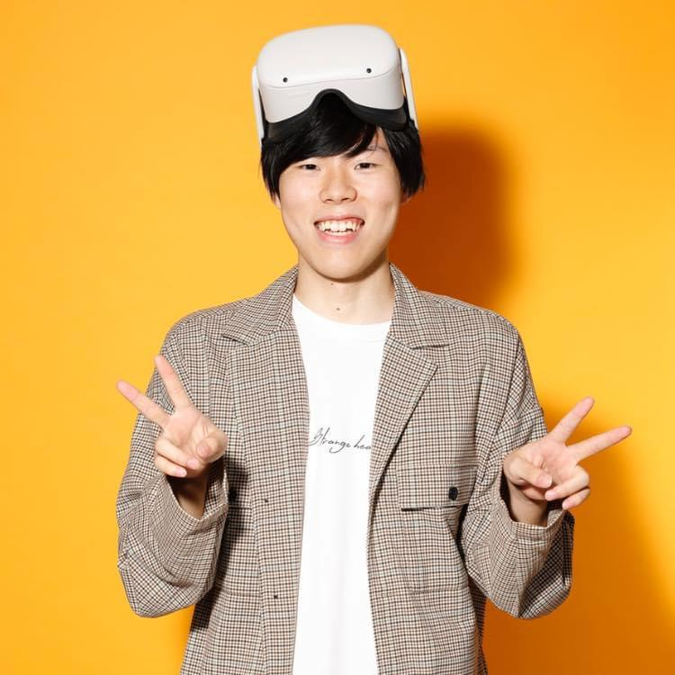

Create a dreaming,
change reality.
GAME
Unity｜VRゲーム開発｜Reflexe Sniper
- VRシューティングリズムゲーム
- Meta Quest2で一人開発
- 2週間で制作
Unity｜VRゲーム開発｜天才小学生vs怪力校長
- 異なるプラットフォーム
- オンラインゲーム
- 2ヶ月で制作
Unity｜2Dゲーム開発｜STOPLINE
- 学内審査会最優秀賞
- 全50ステージ達成者0
- 1ヶ月で制作
Unity｜2Dゲーム開発｜走れ!!グリ男くん
- 2Dランゲーム
- 大阪府との産学連携でTOP10チームに選出
- チーム開発
Unity｜3Dゲーム開発｜鬼遊戯
- 3Dホラーゲーム
- AIによる自動追従
- 1ヶ月で制作
Unity｜3Dゲーム開発｜Calces
- PvEのFPSゲーム
- プログラマーとステージ設計を担当
- Unityインターハイ2019年に出場、惜しくも敗退
VIDEO
Unity｜MV作成｜これがぼくのきもち
- MusicVideoをUnityで編集
- スカイピース様の楽曲をお借りしました
- 1週間弱で作成
LIVE
Unity｜バーチャルライブ｜非公式ファンメイド
- レペゼン地球のバーチャルライブを制作
- 再生回数は約7万回、高評価数は1000超え
- 非公式バーチャルライブ